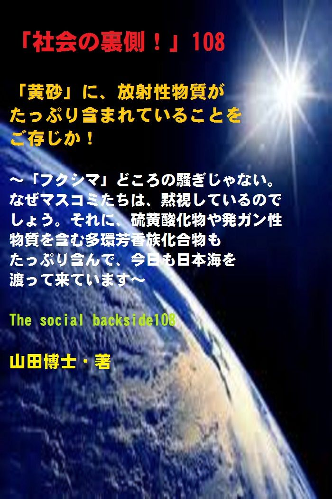

| 「社会の裏側！」108......「黄砂」に、放射性物質がたっぷり含まれていることをご存じか！: 「フクシマ」どころの騒ぎじゃない。なぜマスコミたちは、黙視しているのでしょう。それに、硫黄酸化物や発ガン性物質を含む多環芳香族化合物もたっぷり含んで、今日も日本海を渡って来ています 社会の裏側！ | |
| 山田博士 | |
| kominitesyuppankai (2019) | |

■ 「社会の裏側！ 」 108
「黄砂」に、放射性物質がたっぷり含まれていることをご存じか！
～「フクシマ」どころの騒ぎじゃない。なぜマスコミたちは、黙視しているのでしょう。それに、硫黄酸化物や発ガン性物質を含む多環芳香族化合物もたっぷり含んで、今日も日本海を渡って来ています～
The social backside108
山田博士・著
★ 本書の著作権について
皆さんにはまったく関係ないことだと思いますが、複写、転送、抜粋、転載など、著作権侵害にあたる行為は絶対になさらないで下さい。本書の著作権は、山田博士にあります。今後、皆さんのお役に立ちたい活動が出来なくなりますので、その点、ぜひよろしくお願いします。ささささ、それでは、本書をどうぞ、ごゆっくりご覧下さい。
★ 概要
多くのかたが、ＮＨＫスペシャル番組の影響などで、今日（こんにち）でも「ロマン溢（あふ）れる観光地」として、中国の「シルクロード」に好印象を抱いています。
そして、実際に当地へ出掛けられたかた。
本当にご愁傷様で す(笑) 。
無防備でしょうから、きっと、かなりの放射性物質を体に受けられたことでしょうね、一生影響を与えるほど の ... ... 。
毛沢東時代の１９６４年１０月。
つまり、東京五輪の真っ最中です。
そのときに、シルクロードの楼蘭（ろうらん）遺跡近くで、最初の核実験が行なわれました。
それ以来、１９８０年１０月に中止するまで、「新きょうウイグル自治区」の南部に広がる「タクラマカン砂漠」などで、たびたびの核実験を行ってきたわけですね。
そして、地球の大気中 に" 死の 灰" をまき散らしたわけです。
★★★
世論の広がりを受けて、その後は地下核実験になりましたが、それでも地下水を伝って放射性物質が砂に染み込み、かなり大量のものが外部に漏れたとされています。
そう、その場所は砂漠ですから「砂」にかなりの放射性物質が染みこんだわけですね。
そしてそれが「黄砂」となって、日本 へ ... ... 。
ちなみに、大気圏内の核実験は、ほかの国が中止したあとも、中国とフランスだけは強行しました。
中国は、少数民族の「ウイグル族」が住む奥深い砂漠で強行し、フランスは自国から遠く離れた平和な太平洋の島々で行ったわけです。
だから、これら二つの国の名前は、絶対忘れないでほしい。
これらの支配者たちはのんのんと安全圏に住んでいながら、弱い立場の人たちを一生、放射性物質による害毒で苦しめることにしたわけですから。
こんな卑怯（ひきょう）なことって、ありますか。
★★★
札幌医科大学の高田純さん（放射能防護学）によりますと、１９９６年までに、楼蘭遺跡の周辺で延べ４６回、総爆発威力およそ２２メガトン（１メガトン＝１００万トン）の核実験を行ったと言います。
もの凄い量です。
この総威力は、広島への核攻撃の１３７５発分に相当すると言いますから、ぼくなど、もう怒り心頭です。
少数民族が住んでいる場所で、そんな「実験」を続けていたわけですからね。
とても、人間の考えることではない。
そして、放射能の総量は４０００万エクサベクレルで、チエルノブイリ原子炉災害の約２０００万倍の数値だと。
ちなみに、この「エクサベクレル」というのは、１ベクレル の 1 0の 1 8 乗（じょう）という、とんでもなく大きな数字なんですね。
ぼくなども、こんな数値をふだん言葉に出したこともありません。
★★★
いま中国本土では、深刻な核汚染が進行しています。
中国では、過去３０年間に、核実験が４６回も実施されているんですね。
そして、かつてこうした核実験に参加した退役軍人らの中に、ガン患者が激増し、猛烈な抗議行動が起きていると言います。
また実験場がある「新きょうウイグル自治区」においても、ガン患者は猛烈なスピードで増え続けていて、核実験に参加した解放軍兵士や技術者など数万人は、放射能の影響で深刻な病気や後遺症に悩まされていると言うわけですね（このあたりは、 「 WiLL 201 2年6 月号」や 「 WiLL 201 3年5 月号」参照）。
しかも、退役して長い年月を経た退役軍人たちには、政府からの医療保険も生活補助もないと。
中国の人たちも、大変な事態ですよね。
★★★
「ウルムチ鉄道センター病院」に勤務していたある外科医は、１９９４年からガン患者が激増したことに気付いたと言います。
とくに放射線被曝による血液ガンやリンパガン、それに肺ガンが多いようですね。
彼は２年間にわたって、それらガン患者のデータを記録したほどらしいですよ。
いったい、中国ではいま、何が起こっているのか。
しかし、ぼくたちはこの隣の国の影響を毎年色濃く受けています。
もうご存じの、「黄砂」。
この中には、いま述べたような放射性物質が詰まっており、それが、日本列島の上に、毎年、降り注いでい る ... ... というわけですね。
本書では、今日の問題としてぜひ身につけておいてほしい知識を得ていただくことにします。
そして、可能なら、たとえ１ミリでもいい。
あなたの子孫たちを守るために、自分で可能な行動をなさって下さい。
お願いします。
少しでも、この地球という星を素敵なものとして次世代に遺（のこ）すため に ... ... 。
ささささ、どうぞ、本書をご覧下さい。
★ 目次
★ （第１章）
先述しましたが、日本のマスコミたちは、これらの実態について、なぜか報道しません。中国を刺激したくないように見えます。そして、この「黄砂」については、まるでスポーツの報道みたいに、やれ数値だ、やれどこの地域だ、などと、面白おかしく述べているだけなんです ね ......
★ （第２章）
ところが、この「黄砂」は、海に出る前に、こうした大都市の工場などで排出される窒素酸化物や硫黄（いおう）酸化物、それに発ガン性物質を含む多環芳香族（たかんほうこうぞく）化合物などを、たっぷり吸着させるわけなんですね。そして、その状態のまま、日本海を渡りま す ......
★ （第３章）
じつは、「黄砂」の中に放射性物質が混入しており、それがそのまま偏西風に乗って、日本にまで流れてきているということ。しかも、この数年などではなく、戦後、ずっと何十年にもわたって続いてきたということ。これらを知ると、もう、驚き以外の何ものでもありませ ん ......
★ （第４章）
それどころか、「シルクロード」については、多くの人がＮＨＫスペシャル番組の影響などから、今日でも「ロマン溢（あふ）れる観光地」として、好印象を抱いているわけです。旅行会社のＰＲに乗って「シルクロード」へ観光旅行したかた、本当にご愁傷様です。かなりの放射性物質を体に受けたことでしょう ね ......
★ （第５章）
あの四川（しせん）大地震も、じつは地質上の地震ではなく、地下で「核兵器が連続的に爆発したこと」によるものだということだったという説もあるそうですね。真相は分かりませんが、そういう観点が出てくるところ が ......
★ 「社会の裏側！」シリーズの既刊本案内
★ プロフィール
（最初に、恥ずかしながら、ぼくの紹介を簡単に述べておきます）
やまだ・ひろし。
１９４７年、福井県小浜（おばま）市生まれ。
食生態学者。元大学名誉教授。日本危機管理学会会員。
山田博士いのち研究所主宰。
ベトナム戦争の終わったちょうどその年１９７５年に、マンガストーリィと商品の実名で食べものや環境を取り上げた小冊子「暮しの赤信号」を発行する。実名で取り上げたため、社会に衝撃を与えた。各号１０万部単位で読まれ、隠れたベストセラーなどと、新聞などで何度も報道される。
同じ年、偶然にも有吉佐和子さんの「複合汚染」が発表され、この小冊子はその動きも受けて多くの学校の副読本としても活用された。
文化放送の「なっちゃこワイド」や、ＮＨＫ海外放送「ある日本人」でお話しをしたり、ギター弾き語り公演や、各自治体や学校などへの講演なども続けている。
現在は、メルマガ「暮しの赤信号」（「短縮版」と「完全版」の２種）を発行し、企業名や商品名なども公表して、世界中のかたに喜ばれている。
その読者層は、医師や看護師、栄養士、教師、会社経営者、自治体など、国の内外を問わず、多くの読者たちから毎日のように便りが届いている。年齢層も、１０代からかなりの高齢のかたまで、さまざまだ。
このメルマガは、まぐまぐ！を始め３つのスタンドの合計で、７千部発行しているが、もしご関心のあるかたは、ご覧いただくと嬉しい。毎日、早朝５時に届けられる（日曜は除く）。その時刻を楽しみにされている読者も多いとか。
先述したように、メルマガ「暮しの赤信号」には２種類あり、「短縮版」のほうは無料。「完全版」のほうは、山田の思いが１００％掲載されており、社会を見るのに、毎回大いに参考になるだろう。そのほかにもさまざまな特典がある。
「短縮版」については、ご希望のかたには、お送りしてもいい。
■ 毎月第３土曜日に、東京の恵比寿でお茶飲み会「博々亭（ひろびろてい）」を開催。遠路から毎回読者が駆けつけている。参加条件はメルマガ読者に限定。参加費用は無料だ（８月と１２月はお休み）。
■ 著書には、下記のようなものがある。
『脱コンビニ食！』（平凡社新書）
『危険な食品』（宝島社新書）
『その食品はホンモノですか？』（三才ブックス）
『ひとり月１万円食費で幸せ生活』（ＷＡＶＥ出版）
『最新 危ないコンビニ食』（現代書館）
『あぶないコンビニ食』（三一新書）
『続 あぶないコンビニ食』（同）
『外食店健康度ランキング』（同）
『山田博士の暮しの赤信号』第１巻～第５巻（亜紀書房）
『暮しの赤信号』小冊子＆ＣＤ－ＲＯＭ版全２３巻
『月１万少々の食費で、ザクザクと健康を稼ぐぼくの方法』
『いのち運 転" 即実 践" マニュアル』各話
『社会の裏側！』各巻（アマゾン発行の電子書籍）
『セーラー服と警察犬』（小説）各巻
『実話・食卓の事件簿』各 巻 ... ... など。
■ 山田のホームペー ジ → http://yamadainochi.com/
■ 短縮版メルマガ「暮しの赤信号」専用ブログ
→ https://inochimamorutameni.hateblo.jp/
■ 短縮版メルマガ「暮しの赤信号」登録（無料）
→ http://goo.gl/AFx95J
★ はじめ に ......
こんにちは。
山田博士（やまだ・ひろし）です。
本書をご覧いただき、嬉しく思っております。
この内容をご覧いただくことで、少しでもあなたが「社会の裏側！」の流れにお気づきになり、そしてたとえ１ミリでもいい、即、行動されることを願っております。
ただ読むだけでは、誰でもできます。
それでは、あなたの身の回りの状況は石のように動きません。
本書をご覧になって、これ は ... ... と思うことがあれば、即行動なさって下さい。
お願いします。
その小さな行動の積み重ねこそが、あなたの明日を、１２色のバラ色で輝かせることになると信じております。
なお、この「社会の裏側！」は、今後もシリーズとして発刊して行くつもりです。
もしご関心があれば、「社会の裏側！」という名前で、アマゾンで検索してお調べ下さい。
さまざまな問題の社会の裏側！を詳しく、しかも楽しく述べております。
ぼくの名前で検索されても、見つかるのではないかと思います。
もし、「ＰＤＦ版」でご希望の場合は、ぼくの事務局まで遠慮なくお問い合わせ下さい。事務 局→ http://goo.gl/t12Yx
ささささ、能書きはそこまでにします。
どうぞ、笑顔で、頁をお繰（く）り下さい。
お楽しみに！
★ （第１章）
先述しましたが、日本のマスコミたちは、これらの実態について、なぜか報道しません。中国を刺激したくないように見えます。そして、この「黄砂」については、まるでスポーツの報道みたいに、やれ数値だ、やれどこの地域だ、などと、面白おかしく述べているだけなんです ね ......
先日、講演を頼まれまして、新潟の長岡まで新幹線で行ってきました。
いやあ、新潟へは、本当に久しぶりです。
ぼくは、学生時代にクルマで日本一周をしたのですが、そのとき、この越後平野のど真ん中の田んぼのあぜ道にクルマを止め、その中で野宿をしたことがあります。
あのころは、若かったなあ。
横になったクルマの窓から見える星空。
まるで、宇宙の懐（ふところ）に抱かれながら、丸くなって寝るような心境でした。
そして、ぼくのこの目から、遠い宇宙の彼方（かなた）で光っているあの星たちまで、何もさえぎるものがないという神秘。
当時若かったこんなぼくでも、その美しさに、しばしウットリしてなかなか寝付けませんでした（あ、でも、運転に疲れたのか、すぐに寝込んでしまったようでした が ... ... 笑）。
その新潟での講演も終わり、担当のかたにクルマで長岡駅まで送っていただきました。
駅の駐車場にクルマを止めて後ろに回りましたら、後部ガラスがいやに黄色くなっているんですね。
お聞きしたら、「これ、黄砂（こうさ）なんで す ... ... 」とのこと。
そうか。
中国大陸から日本海を渡って、こうして新潟まで黄砂が飛んできているのか。
ぼくは、この「黄砂」という言葉を心の中で何度もつぶやきながら、いろいろな考えを頭の中で巡（めぐ）らせていました。
「黄砂 」 ... ... 。
日本では、気象庁が、「黄砂情報（予測図）」なるものを出し、いわば自然現象のような扱いになっていますよね。
多くの国民たちも、「ああ、また黄砂 ね ... ... 」なんて何事もないように口に出しながら、「晴れや曇り」のような気象状況みたいに思ってしまっています。
違いますか。
でも、こんなことをしていると、「ああ、また空襲 ね ... ... 」なんて言いながら、敵機が飛んでいる空を平然と見上げているような未来がくるかもしれません ぞ( まあ、そんなことはもちろんないでしょうけれど ね ... ...笑) 。
でも、それぐらい、この「黄砂」については、もう皆さんは慣れてしまっておられる。
なのに、日本のマスコミたちは、誰に気兼ねをしているのか、この「黄砂」の実態を、絶対に報道しないわけです。
これこそ、不思議。
じつは、あとから述べますが、この問題は、原発で揺れている今回の「フクシマ」どころの騒ぎじゃないんですね。
それぐらいの問題が隠されているのに、なぜか、報道しない。
何度も言いますが、不思議です。
「黄砂」のほかに、いまは 「 P M ２．５」なる言葉も、国民の日常語になりましたよね。
これは、大気中に浮遊（ふゆう）してい る 2.5μ m 以下の小さな粒子のことなんです （ 1μ m とは、１マイクロメートル。つま り 1m m の千分 の1 のこと）。
この 「 P M ２．５」は非常に小さくて、（たとえば、髪の毛の太さ の 1/3 0 ほどですか）、肺の奥深くまで入りやすく、呼吸器系への影響に加えて、循環器系への影響も心配されているものなんです。
大変なシロモノですよね。
こうした「黄砂」や 「 P M ２．５」たちが、現在、中国大陸から、「日常的に」飛んできている。
先述しましたが、日本のマスコミたちは、これらの実態について、なぜか報道しません。
中国を刺激したくないように見えます。
そして、この「黄砂」については、まるでスポーツの報道みたいに、やれ数値だ、やれどこの地域だ、などと、面白おかしく述べているだけなんですね。
それらの犯人や原因、そして体に与える影響などについては、まったく知らんぷりなんです。
それらこそ、多くの国民は知りたいの に ... ... 。
だって 、 ● ● が分からなければ、「黄砂」への対策など、できるはずがないじゃないですか （ ● ● は、下記の設問をご覧下さい）。
マスクをしろ、外へ出るな。病人や子どもはとくに気をつけろ。
そんなことを毎年騒いでいても、いっこうに埒（らち）があきません。
その根本的な原因を追及して、それらを無くすように行動する。そうでなければ、来年も、再来年も、１０年経っても、同じことをしていることになると思いませんか。
しかも、日本人全体への被害は、毎年、年を追ってだんだん大きくなり、そのうち、手が負えなくなる。
そのときになってからでは、もうどれだけ行動しても、後の祭りです。
きっと、マスコミたちは、日本人のことなど真剣に考えていないんだなあと、ぼくは痛感します。
それとも、どこか「よその国の連中」が、日本のマスコミたちを牛耳（ぎゅうじ）っているのかしらん。
まあ、話が長くなりますので、それはまた稿（こう）を改め て(笑) 。
それはそれとして、この「黄砂」や 「 P M ２．５」などの何が問題なのかと言います と ... ... 。
さあさあ、次をどうぞ。
★ （第２章）
ところが、この「黄砂」は、海に出る前に、こうした大都市の工場などで排出される窒素酸化物や硫黄（いおう）酸化物、それに発ガン性物質を含む多環芳香族（たかんほうこうぞく）化合物などを、たっぷり吸着させるわけなんですね。そして、その状態のまま、日本海を渡りま す ......
ぼくたち日本人にとっては、なんとも迷惑至極なこの「黄砂」は、先述しましたように、中国から、海を渡って飛んできます。
中国の西部や北部の奥地にある「タクラマカン砂漠」や「ゴビ砂漠」などで舞い上がったこの「黄砂」は、大気汚染が深刻な海沿いの大都市の上空を通過することになるわけですね。
大都市は、海のそばの沿岸に多いわけですから。
ところが、そのときに、こうした大都市の工場などで排出される窒素酸化物や硫黄（いおう）酸化物、それに発ガン性物質を含む多環芳香族（たかんほうこうぞく）化合物などを、たっぷり吸着させるわけ。
そうして、その状態のまま、日本海を渡ります。
ちょうどうまいことに（？）、偏西風（へんせいふう）が吹いていますので、そのまま日本列島を直撃することになります。
そうですよね。
しかもそれが直撃する範囲は、九州や中国、四国、近畿といった西日本どころか、なんと中部地方から関東や甲信越のあたりまでと、非常に幅広い。
これだけも日本、そして日本人の健康に大きな影響を与えている「黄砂 」 ... ... 。
２００２年に、長崎県五島市三井楽町の福江島に、国立環境研究所などが東アジア域の大気環境を研究するための観測地点として、「総合地球環境学研究所」を開設しました。
五島列島は、かなり中国にも近い場所ですので、日本列島での影響を受けずに、まさに「中国由来の黄砂」だけの数値がよく分かるという寸法なのでしょうね。
そして、春先に、中国からの越境大気汚染が原因と考えられる高濃度の「光化学オゾン」と、「２．５ミクロン以下の微小粒子」 （ P M ２．５エアロゾル）を観測したことがあると言います。
その結果、こうした「硫酸塩エアロゾル」を大量に吸い込むことによって、体調を崩す日本人が増えているというわけですね。
この「硫酸塩エアロゾル」とは、工場や自動車などから排出される二酸化硫黄（にさんかいおう）が大気中で化合して吸着した、微小粉塵（びしょうふんじん。エアロゾル）と言えるものなんです。
この「硫酸塩エアロゾル」は、ＰＭ ２. ５（粒径 ２.５ μ m 以下）の主要構成粒子と言えます。
そう、主要なものなんですね。
そのため、体を壊（こわ）す具体的な症状として、「人の抗体や免疫力が大幅に低下して、さまざまな伝染病の流行を拡大する 」 ... ... 。
いやはや、ですよね。
しかも、日本国内だけで何をしようと、この問題は解決できない。
また、さらに衝撃的な報告もあります。
２００８年１月に発行された「米国科学アカデミー紀要」に掲載された論文なんですが、その中で、カナダの遺伝子学者チームの研究成果が記されていました。
それによれ ば ... ... 。
「スモッグが人体に及ぼす悪影響として、精子の遺伝子構造の変化を発見した」というわけですね。
もちろん、これはマウス（ネズミ）による実験結果ではありますが、遺伝子の発現や活性化に異常が起こることは、重大です。
そして、これらはほかの物質と同様、発ガンとも大いに関係しているとも言います。
こんなものを、ぼくたち日本人は中国のために、一生、体に入れ続けなければならない。
なぜ、このような行為をする国を、世界は放置しておくのか、ぼくは何度考えても分かりません。
この「硫酸塩エアロゾル」の多くは、中国の工場で硫黄分の多い石炭を燃焼させたりすることで発生します。
そのほか、集合住宅のボイラーや各家庭（石炭ストーブなど）などからも発生しますので、寒い時期に多くなるのですが、工場が休みになる旧正月の間でも、各家庭から発生するため、発生量はほとんど減りません。
しかも、中国の大気汚染対策は、本当に杜撰（ずさん）。
国民の声を聞いたりはしません。
日本とは、その点、まったく異なっているわけですね。
だから、多くの工場やボイラーの煙突からは、「脱硫せずに」垂（た）れ流しとなります。
中国での「硫酸塩エアロゾル」の発生量は、なんと火山灰よりも多いと言います。
これは衝撃です。
これらは、その汚染度の画像を見れば、一目瞭然です。
こうして、中国で発生する「硫酸塩エアロゾル」は膨大な量になり、雨にも落とされないまま「偏西風に乗る」。
そし て ... ... 日本 へ ... ... 。
この中国という国は、たとえば「窒素酸化物」の年間排出量を１．５％減少させるという計画を打ち出したりしても、実現はいつも不可能なんです。
たとえいくら厳（きび）しい排出基準を設けても、国内メーカーたちは、「コストと技術の両面」から、達成など考えもしません。
つまり、儲けだけしか頭にはないわけですね。
自分の子孫たちが倒れようが、隣国の日本の人間が倒れようが、そんんなこと、１ミリも頭の中にはないんですね。
だから、いつまで経っても、改善しない。
現場では、努力しようという姿勢すら見られないわけですね。
たとえ、日本が「脱硫装置」を援助で設置しても、コスト削減などを理由に「稼動率が低い」「ニセモノの脱硫装置を付けている」「生産現場は利益第一。環境基準に違反していることを知っていても、バレたら罰金を払ったほうが安上がり 」 ... ... なんです。
そして、昨日と同じく、今日も明日も、「汚染物質が垂れ流し」状態となっています。
悲しい国です。
悲しい国民です。
それなのに、いまや世界最大の自動車市場となり、窒素酸化物の排出量はこの４半世紀でほぼ４倍にもなり、都市における大気汚染の元凶となっているわけですね。
「数十メートル先が霞んで見えない」「深く呼吸をしたら胸が痛くなる 」 ... ... こんな都市が、世の中にありますか。
ところで、「黄砂」とは異なり、 「 P M ２．５」とは、自動車の排気ガスなどに含まれる微粒子の総称なんです。
そして、人間が 「 P M ２．５」を吸い込むと、気管や肺胞（はいほう）へ吸収されてしまい、気管支炎やぜんそく、そして肺ガンを引き起こす可能性があるわけですね。
この 「 P M ２．５」の粒子は、超微粒子ですので、市販のマスクで完全に除去することもできず、スッとすり抜けます。
そのため、なかなか対策が困難とされているんですね。
中国国内では、こうしたこともあり、環境汚染の深刻さが、想像を絶しているのですが、早く、国民のための政治が行われるといいですよね。
たとえば、少し前になりますが、２００７年に「世界銀行」は、中国の環境汚染に関する報告書を提出しています。
それによりますと、空気が汚れている世界の都市のワースト２０のうち、なんと１６までを中国が占めていて、空気汚染が原因で早死にする者が毎年およそ２５万人から４０万人いる と ... ... 。
もう、口をアングリです。
それに、中国の河川の汚染も恐ろしいことになっているようですが、まあ、それらは少しずつ、日本人にも分かってきました。
いままでは、なかなかそういう事実が隠されていて表に出てこなかったわけですね。
なぜ、河川がそれだけも汚れてしまったのかと言えば、河川の流域や沿海地帯には、２万１０００余りもの化学工場が分布していて、そこから「有毒な廃液」を絶えず排出しているからなんです。
現在、中国の川や湖の７０パーセント以上、そして都市の地下水の９０パーセント以上が汚染されていると言いますが、でも、その数字でさえ、どこまで事実なのか、さっぱり分かりません。
なにしろ、国民が政治家を選べないような国では、統計でも数値でも何でもやりたい放題ですからね。
そういう国が、日本の隣にあり、そして、「黄砂」や 「 P M ２．５」を、平気で今日も、大気に排出している。
そして、さらに驚くべきことが、あります。
今回は、それを述べるのが本題です。
いわば、いままでの文章はプロロー グ ...... (笑) 。
次の項目を、どうぞ、楽しみにご覧下さい（あまり楽しんでいてもらっても困るのです が ... ... ）。
★ （第３章）
じつは、「黄砂」の中に放射性物質が混入しており、それがそのまま偏西風に乗って、日本にまで流れてきているということ。しかも、この数年などではなく、戦後、ずっと何十年にもわたって続いてきたということ。これらを知ると、もう、驚き以外の何ものでもありませ ん ......
今回のタイトルにもありますように、こうした「黄砂」は、ただの「黄色い砂」ではありません。
じつは、この中に、放射性物質が混入しており、それがそのまま偏西風に乗って、日本にまで流れてきているということ。
しかも、この数年などではなく、戦後、ずっと何十年にもわたって続いてきたということ。
これらを知ると、もう、驚き以外の何ものでもありません。
だから中国は、「フクシマ」のことを非難する権限はありません。なにしろ、自分の国で、「人為的に」核実験を長期にわたり続けてきたわけですから。
逆に、日本に謝（あやま）るべきです。
日本の「フクシマ」は、大地震が原因だったというように、自然災害のせいでした。
もちろん、日本のような地震国で、原発などを稼働すること自体、狂気じみてはいますけれどね。
でも中国は、現在、日本人が苦しんでいる「黄砂」が舞い上がる砂漠で、何をしてきたか。
毛沢東時代の１９６４年１０月。
つまり、東京五輪の真っ最中です。
そのときに、シルクロードの楼蘭（ろうらん）遺跡近くで、最初の核実験を行いました。
それ以来、１９８０年１０月に中止するまで、「新きょうウイグル自治区」の南部に広がる「タクラマカン砂漠」などで、たびたびの核実験を行ってきたわけですね。
そして、地球の大気中 に" 死の 灰" をまき散らしました。
世論の広がりを受けて、その後は地下核実験になりましたが、それでも地下水を伝って放射性物質が砂に染み込み、かなり大量のものが外部に漏れたとされています。
ちなみに、大気圏内の核実験は、ほかの国が中止したあとも、中国とフランスだけは強行しました。
中国は、少数民族の「ウイグル族」が住む奥深い砂漠で強行し、フランスは自国から遠く離れた平和な太平洋の島々で行ったわけです。
だから、これら二つの国の名前は、絶対忘れないでほしい。
これらの支配者たちはのんのんと安全圏に住んでいながら、弱い立場の人たちを一生、放射性物質による害毒で苦しめることにしたわけですから。
こんな卑怯（ひきょう）なことって、ありますか。
札幌医科大学の高田純さん（放射能防護学）によりますと、１９９６年までに、楼蘭遺跡の周辺で延べ４６回、総爆発威力およそ２２メガトン（１メガトン＝１００万トン）の核実験を行ったと言います。
もの凄い量です。
この総威力は、広島への核攻撃の１３７５発分に相当すると言いますから、ぼくなど、もう怒り心頭です。
少数民族が住んでいる場所で、そんな「実験」を続けていたわけですからね。
とても、人間の考えることではない。
そして、放射能の総量は４０００万エクサベクレルで、チエルノブイリ原子炉災害の約２０００万倍の数値だと。
ちなみに、この「エクサベクレル」というのは、１ベクレル の 1 0の 1 8 乗（じょう）という、とんでもなく大きな数字なんですね。
ぼくなども、こんな数値をふだん言葉に出したこともありません。
そのような放射性物質を、大気に一気に放出した中国。
これらを、「地球人類への犯罪」と言わずして、何が犯罪なんです？
そして、今後、いつまで続くか分からないほどの「黄砂」による日本列島への「攻撃」。
ぼくたち外国にこれだけも影響を与えて、「フクシマ」どころの騒ぎじゃないじゃありませんか。
もちろん、日本人の一人として、「フクシマ」の影響については、世界に詫（わ）びることにします。
でも、差別された人たちの住む場所で、これだけの核実験を人為的に行うという狂気。
とても、ぼくには理解できません。
しかも先述したように、その核実験をした場所は、少数民族が平和に暮らしていたところなんですね。
その「ウイグル族」から２０万人近い（７５万人という説もあるようですが）急性死亡者を出した楼蘭は、まさしく「核実験のホロコースト」だったわけです。
そのような現実が、日本のすぐそばの国で、ついこの間、行われてい た ... ... 。
そして、それらを日本のマスコミたちは、誰一人、ぼくたちに伝えなかっ た ... ... 。
知っていても、伝えようとしなかった。
何度も言いますが、日本のマスコミや広告会社に、中国や韓国の人間たちが深く入り込み、企業を牛耳（ぎゅうじ）っていることは確かでしょう。
そうでもなければ、中国や韓国に都合のいいニュースしか流れないなんて、あり得ませんからね。
そんな国なんて、どこにもありません。
日本の敗戦後、こうした動きが続いてきました。
そのため、なんとも呑気なニュースばかり、日常は流れています。
いつも述べていますが、大事なニュースの時間に、スポーツの中継ばかり垂れ流すマスコミたち。
こういうことを知りますと、もう、悲しくなります。
だから、こうした核実験場を日本のマスコミは美化し、「シルクロード」と称して、観光の名所にしているわけですね。
だけ ど ... ... 。
★ （第４章）
それどころか、「シルクロード」については、多くの人がＮＨＫスペシャル番組の影響などから、今日でも「ロマン溢（あふ）れる観光地」として、好印象を抱いているわけです。旅行会社のＰＲに乗って「シルクロード」へ観光旅行したかた、本当にご愁傷様です。かなりの放射性物質を体に受けたことでしょう ね ......
だけど、この「シルクロード」での悲惨な死をテーマにしたドキュメンタリー 「 Death on the Silk Roa d 」（「シルクロードの死神」）という映画がありました。
１９９８年にイギリスのテレビ局で放映されたものでしたが、世界に衝撃を与えましたよね。
この映画は８３カ国に伝播（でんぱ）し、優れた報道映像作品に送られるローリー・ペック賞まで受賞しています。
それなのに、この日本のマスコミたちは、こうした輝かしい事実まで完全に無視しました。
じつは、こういう事実って、よくあるんですよ。
いつだったかもメルマガで述べましたが、「遺組み」（遺伝子組み換え）についてのドキュメント映画は、日本のマスコミでは大きく取り上げられませんでした。
外国では、しっかり伝えられていたの に ... ... 。
今回の「シルクロード」の現実を表す映画も、それと同じでしたね。マスコミは、無視した。
それどころか、「シルクロード」については、多くの人が井上靖の作品とＮＨＫスペシャル番組の影響などから、今日でも「ロマン溢（あふ）れる観光地」として、好印象を抱いているわけです。
まあ、いまになってぼくが話しても、後の祭りでしょうが、いままで、旅行会社のＰＲに乗って「シルクロード」へ観光旅行したかたは、本当にご愁傷様です。
かなりの放射性物質を体に受けたことでしょうね。
あのような核実験をした場所へ、無防備で、わざわざ出かけたわけですから。
いま中国本土では、深刻な核汚染が進行しています。
先述しましたが、中国では、過去３０年間に、核実験が４６回も実施されているんですね。
そして、かつてこうした核実験に参加した退役軍人らの中に、ガン患者が激増し、猛烈な抗議行動が起きていると言います。
また実験場がある「新きょうウイグル自治区」においても、ガン患者は猛烈なスピードで増え続けていて、核実験に参加した解放軍兵士や技術者など数万人は、放射能の影響で深刻な病気や後遺症に悩まされていると言うわけですね（このあたりは、 「 WiLL 201 2年6 月号」や 「 WiLL 201 3年5 月号」参照）。
しかも、退役して長い年月を経た退役軍人たちには、政府からの医療保険も生活補助もないと。
中国の人たちも、大変な事態ですよね。
「ウルムチ鉄道センター病院」に勤務していたある外科医は、１９９４年からガン患者が激増したことに気付いたと言います。
とくに放射線被曝による血液ガンやリンパガン、それに肺ガンが多いようですね。
彼は２年間にわたって、それらガン患者のデータを記録したほどらしいですよ。
いったい、中国ではいま、何が起こっているのか。
それに、地震の問題 も ... ... 。
★ （第５章）
あの四川（しせん）大地震も、じつは地質上の地震ではなく、地下で「核兵器が連続的に爆発したこと」によるものだということだったという説もあるそうですね。真相は分かりませんが、そういう観点が出てくるところ が ......
しかも、中国で起こった「大地震」でさえ、本当のところは、核実験のせいだったので は ... ... という疑惑が広がっているわけですね。
そして、ほかの事件や事故を見ると、それらの話が事実のように思えるほど、環境破壊や人間破壊が進んでいるように見えます。
たとえば、あの四川（しせん）大地震。
覚えていらっしゃいます？
あの地震にはぼくも驚きました。
いったい、中国で何が起こっているんだろう。
多くの人たちは、本当に大丈夫なのだろうか。
ずいぶん、ぼくも悶々（もんもん）としました。
いかに「反日の国」であったとしても、庶民たちは、ぼくたち日本人と同じ生身の人間ですからね。
２００８年５月１２日１４時２８分に発生した大地震でしたが、１５０万人以上が被災したと言われています。
ところが、そのとき、生存確率が急激に下がる「７２時間」を目前にして、必死の救助活動が行われているとき、日本政府からも支援を申し出たのですが、中国政府は早々に断ってきました。
その理由は「救援部隊の力も物資も足りている。いまは必要ない」ということでした。
このときの中国政府の対応については、中国人たちの間でもネットユーザー間で物議が巻き起こっていました。
なぜこの事態なのに、日本からの救援を辞退したのかと、ね。
日本だけじゃなく、ほかの外国からの救援も辞退しているわけです。
これは、やはりおかしい。
何か、隠すべきものがあるのじゃないか。
誰しも、そう思いました。
だって、現実には、救援部隊の数もすべてが不足していましたからね。
いったいなぜ、あのとき、外国人が入ってくるのを拒（こば）んだのか。
２０１２年５月１１日の「阿波羅新聞網」は、世界中から四川省の被災地に送られた義援金が、なんと軍隊のために使われていた事実を報道しています。
もちろん、それが本当なのかどうかは、日本に住むぼくたちには分かりません。
でも、そうしたニュースが流れるのには、やはりそれなりの理由があるのだとも、ぼくは思っています。
火の気（け）がまったくない所に煙は立たな い ... ... というのは、ある意味、正しいとは思います。
もちろん、現実には、さまざまな思惑が入り交じっていますから、必ずしもそれらが事実だとは言えないかもしれません。
火が無くても、煙が上がることもあるかもしれない。
でも、ふだんの社会を眺めていれば、およそのところは想定できます。
たとえば、いまの日本で、もし大地震が起こったとしても、それが即核実験のせいだとは、世界の誰も思わないでしょう。
それと同じじゃありませんか。
ふだんの行動がモノを言うわけですよね。
中国のいままでの過去の歴史を見てみますと、弱者や少数民族に対してはもの凄い弾圧をしているという現状があります。
そして、核兵器などの開発をしている。
そしてそれは、いまも続いている。
そうした現実を眺めていれば、今回のこの四川大地震も、じつはそうだったのではないかと、誰しも思うのじゃないでしょうか。
あるかたは、３年間の現地調査によって記録を集めたのですが、それで明らかになったことは、この大地震は地質上の地震ではなく、地下で「核兵器が連続的に爆発したこと」によるものだということだったそうですね。
何度も言いますが、それが真実かは、外部にいるぼくには分かりません。
でも、四川省綿陽には、中国解放軍の核兵器基地がありますし、ここには核兵器研究施設である「中国工程物理研究院」があるんですね。
そして、地震後の６月２７日には、化学防護部隊２７００人が、「核物質に対する応急救護のために」派遣されています。
四川省では地震当時、多くの軍用車に白色の化学防護服を着用した兵士が乗っているのが見られていますし、これについて解放軍上層部の関係者は、「四川省の大地震による連続爆発で、中国最大規模の核兵器貯蔵庫が破壊された。ここには最新兵器の試験基地と核兵器試験施設も含まれている」と語ってい る ... ... というわけですね。
そのため、地震が先なのか、核兵器の爆発が先なのか。
真実は不明ですが、先述したような核実験を何回も繰り返してきた中国という国の存在自体が、いま大きく問われているのは間違いないでしょう。
今回は、「黄砂」の広がりから、放射性物質の問題まで述べてみました。
でも、考えてみれば、ぼくたちの周囲には、中国から輸入された農産物がすでに山積みです。
外食や中食（なかしょく）などは、そのほとんどが、そうした国で穫れた作物なんですね。
そして日本に住んでいたぼくたちは、昭和時代、中国が行った核実験による影響を、まるでシャワーのように空から体中に浴びながら育ってきたわけです。
そしていま、「黄砂」が空から落ちてくる。
そう、再び、放射性物質の影響を受けようとしているわけですね。
食べものからの影響と、空からの影響 と ... ... 。
そうだよなあ。
ぼくが学生当時、越後平野の水田のあぜ道で見上げたあの夜空。
キラキラと、まるで笑顔のように輝いていたあの星たち。
きっと、いまのぼくたち人間を見下ろして、ほとほと呆（あき）れていることだろうなあ。
「おい、地球人たちよお。
そんなちっぽけな星に住んでいるのに、なぜそんな愚かなことを、何度も何度も何度も何度 も ... ... 続けているんだい。
そうだ。
地球人の君たちに、『過去から学ぶ』という立派な言葉をプレゼントしよう。
よく、反芻（はんすう）してくれよ。
そこに立っているポケ～ッとした山田クンには、こんな言葉はきっと猫に小判かもしれないけ ど ... ... ね」
な、何をおっしゃるんですか。星さんたち。
ぼくに は ... ... えっ と ... ... ホンモノの「小判」がいい な ... ... 。
ハハ ハ ... ... 。それじゃまた次回ね。ご機嫌よう。（山田博士）
▼ 設問で す ▼
設 問→ 上記の文章を読み、下記 の ● ● にあてはまるものを、選択語句から選んでみよ。ただし２文字とは限らない。
「だって 、 ● ● が分からなければ、『黄砂』への対策など、でき るはずがないじゃないですか」
【選択語 句→ 結果、性別、原因】
■ 答 え ■
下記のとおりです。でも、先に答えを見てはいけません。
本文を再度ご覧になり、十分想像してから答えをご覧下さい。
きっとその繰り返しが、あなたの明日を輝かせることになると思っています。
答 え→ 原因
（了）
★ （最後にひとこと）
ここまでお読みになって下さり、ありがとうございました。
ここで述べているような内容の最新情報を、メルマガ「暮しの赤信号」では述べております。
企業名や商品名も公表していますので、もしご関心のあるかたは、下記から登録されれば、毎回、自動的にお送りします。
「短縮版」は無料です。
毎回、早朝５時に、あなたのところへ配信します。
現在、全世界で数千部を配信しておりますが、楽しい文体が人気のようですよ。早朝５時をお待ちになっているかた も ... ... 。
その日から役立つ内容です。
「短縮版」（無料です ）→ http://goo.gl/AFx95J
メルマガ上で、また、お逢いしましょう！
★ ★ 「社会の裏側！」シリーズの既刊本案内
「電子版」と「ＰＤＦ版」があります。お好みのほうで、どうぞ。
これだけたくさん、マスコミも言わない内容が、存在します。ご関心のあるものから、ご覧下さい。すべて短文で、サクッと、いまの社会の真実が読めます。
下記の「検索欄」に、いまご関心のあるキィワードを入れてみて下さい。きっと、ヒットすると思います。
【全巻案内専用ブログ 】 → https://syakainouragawa234.blogspot.com/
★ 価格は、現在、５８５円です。各巻の専用頁からお求め下さい。
★ 「ＰＤＦ版」は、下記のフォームからどうぞ
→ https://goo.gl/GPFu2B
価格は「電子版」と同じにしています。ただ当方の人手の問題で、できれば「電子版」をお求め下さると嬉しい。でも、どうしてもの場合は、ぜひご連絡下さい。
「ＰＤＦ版」の場合、巻数が多くなれば、かなりの割引にしていますが、上記のフォームからの「自動返信」でご確認下さい。
★
★
★
■ 「社会の裏側！」 １ ... ... 子宮頸ガンワクチンで女子中高生が泣いている！ → https://goo.gl/BMwQTm
■ 「社会の裏側！」 ２ ... ... ペットボトルを「ペット」にしてはいけない。新生児の男女比が驚くことになっている！
→ https://goo.gl/QuFsYz
■ 「社会の裏側！」 ３ ... ... 牛丼店「すき家」が、従業員を貧困のどん底に！ → https://goo.gl/YrmzNf
■ 「社会の裏側！」 ４ ... ... 小学校の低学年児に「向精神薬」を処方する医師たち！ → https://goo.gl/L97NJu
■ 「社会の裏側！」 ５ ... ... 映画「世界が食べられなくなる日」。原子力、「遺組み」の現実！ → https://goo.gl/7HwZ38
■ 「社会の裏側！」 ６ ... ... 蚊帳（かや）に練り込まれた「毒物」ってご存じでした？ → https://bit.ly/2Pa3HWn
■ 「社会の裏側！」 ７ ... ... あなたは、放射性物質が濃縮された「エコセメント」で住宅を建てますか？ → https://goo.gl/UbkdH4
■ 「社会の裏側！」 ８ ... ... いまや加工食品の甘味のほとんどは「異性化糖」だ！遺伝子組み換えコーンによるこの甘味料が日本人を壊す
→ https://goo.gl/6FNSeG
■ 「社会の裏側！」 ９ ... ... ＬＥＤ照明の「人体実験国」ニッポン！
→ https://goo.gl/VQWQam
■ 「社会の裏側！」１ ０ ... ... コーラの着色料に「発ガン性」の疑惑が出た！ → https://goo.gl/XvNdfn
■ 「社会の裏側！」１ １ ... ... 「香料」のせいで死ぬ思いの人たちへ！日本人の母乳や脂肪から初めて検出された「人工のムスク」
→ https://goo.gl/UcZRzf
■ 「社会の裏側！」１ ２ ... ... 子どもの「健康格差」が凄まじい！なんと「就学援助」の小中学生が１４２万人になった
→ https://goo.gl/nGhdnC
【あまりに多いので、途中は省略しています】
全巻案内専用ブロ グ → https://syakainouragawa234.blogspot.com/
■ 「社会の裏側！」９ ６ ... ... たった１本の歯が、認知症の一大原因だった！ → https://bit.ly/2JRKoKR
■ 「社会の裏側！」９ ７ ... ... 最近、野菜の農薬の匂い、きつくないですか？ → https://bit.ly/2KcSq0R
■ 「社会の裏側！」９ ８ ... ... ２週に１度頻発している「介護殺人」で、主役にならぬ方法！ → https://bit.ly/2Jgz9u2
■ 「社会の裏側！」９ ９ ... ... 「生理用の紙ナプキン」が、女性たちを泣かせている！ → https://bit.ly/2NhSlKr
■ 「社会の裏側！ 」 100... ... 「イチゴ」は食べてはいけない！日本農産物「安全神話」の崩壊をどう防ぐか ！ → http://tiny.cc/hztnwy
■ 「社会の裏側！ 」 101... ... 子を捨てる親たちよ！ なぜ君たちは「養子縁組」の選択肢を持たないのだ！ → https://bit.ly/2zRhzer
■ 「社会の裏側！ 」 102... ... 「ファクトリー・ファーミング（工場式畜産）」が、抗生物質の効かない体を作っていた！
→ https://bit.ly/2P5Yw5f
■ 「社会の裏側！ 」 103... ... 「パン食」が、日本人の心と体を壊（こわ）している！ → https://bit.ly/2NupNkw
■ 「社会の裏側！ 」 104... ... 漫画家さくらももこさんの「乳ガン死」で思うこと。最近、この症状が女性に急増しているのはなぜなのだろう！ → https://bit.ly/2Mqim9B
■ 「社会の裏側！ 」 105... ... 日本人は、昔から「エシカル・コンシューマー」だった。なのに、なぜいま、あえて逆方向に向かうのだろう！
→ https://bit.ly/2JiwnGi
■ 「社会の裏側！ 」 106... ... なぜ、小児甲状腺ガンが、福島「県外」の人に深刻なのだろう！
→ https://bit.ly/2ENHEQw
■ 「社会の裏側！ 」 107... ... バイクで生徒が廊下を走り回る中学校を、「非行ゼロ」にさせたのは、なんと「完全米飯給食」だった！
★ 「ＰＤＦ版」の場合は、下記のフォームからご連絡下さい。巻数が多くなれば、かなりの割引にしていますので、お楽しみに！
→ https://goo.gl/GPFu2B
★ 奥付
「社会の裏側！ 」 108
「黄砂」に、放射性物質がたっぷり含まれていることをご存じか！
～「フクシマ」どころの騒ぎじゃない。なぜマスコミたちは、黙視しているのでしょう。それに、硫黄酸化物や発ガン性物質を含む多環芳香族化合物もたっぷり含んで、今日も日本海を渡って来ています～
The social backside108
山田博士・著
第１刷発行日 ： 2019/02/28
－－－－－－－－－－－－－－－－－－－－－－－－－－－－－－
山田博士／著
発行／こみにて出版会
105-000 1 東京都港区虎ノ門２－２－５共同通信会館Ｂ１Ｆ
メインホームペー ジ → http://yamadainochi.com/
短縮版メルマガ「暮しの赤信号」専用ブログ
→ https://inochimamorutameni.hateblo.jp/
事務 局 → http://goo.gl/t12Yx
－－－－－－－－－－－－－－－－－－－－－－－－－－－－－－